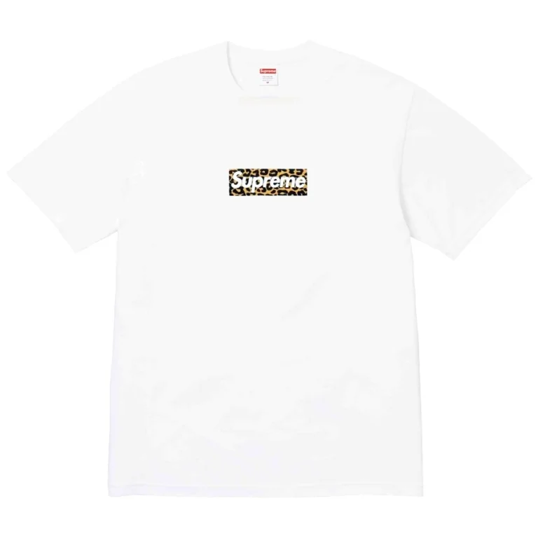
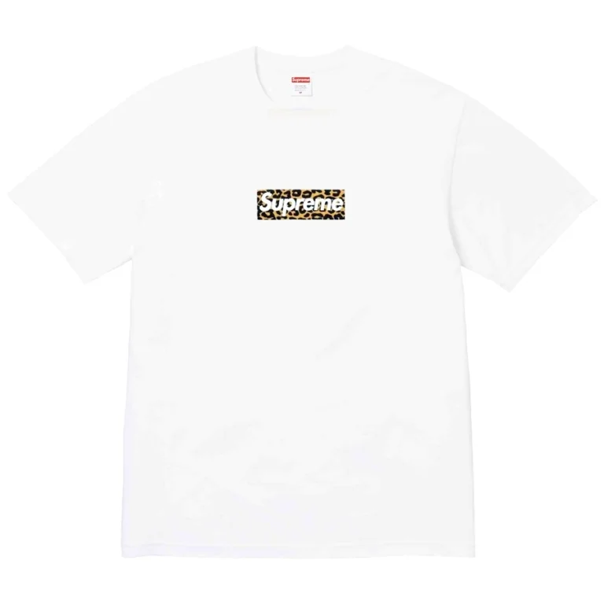
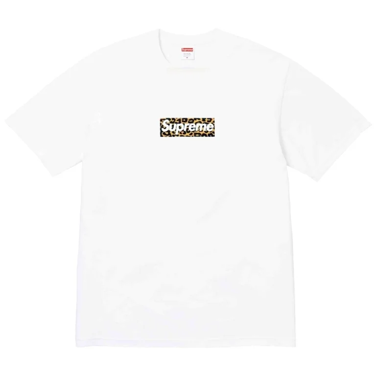

Perhaps the most iconic aspect of Supreme's brand is their t-shirts. The box logo tee is instantly recognizable, and highly sought after. Supreme's t-shirts are the most accessible aspect of their brand, typically costing between $40 and $75 for higher-quality heavy knits. The lower price tag tees are incredible quality, with good weight and precise stitching. The prints are also resistant to cracking. These shirts are endlessly creative and often feature major collaborations, from Sonic Youth to Akira.

I was let down by this season's t-shirt offerings. There are the classic twists of the Supreme logo, but they don't feel fresh. The Futura Box Logo, Shadow, and Pinline tees feel recycled. These make good beginner pieces, but lack the whimsical creativity great Supreme tees have.
Notable shirts for SS24 are the Rowlf Tee, a part of the revamped collaboration with the Muppets. In 2008, Supreme released the iconic t-shirt featuring a Kermit puppet wearing a box logo tee. The Rowlf tee attempts to accomplish this level of iconography, but falls short.
My personal favorite shirt this season is the Electromagnetic Tee. This design incorporates a 90s anime vibe, conjuring Voltron and Evangelion energy with a brightly colored mech and neon-lined text. This shirt captures the creativity Supreme is known for -- taking something recognizable and finding a way to brand it. This shirt is unique, and is a standout for the season.